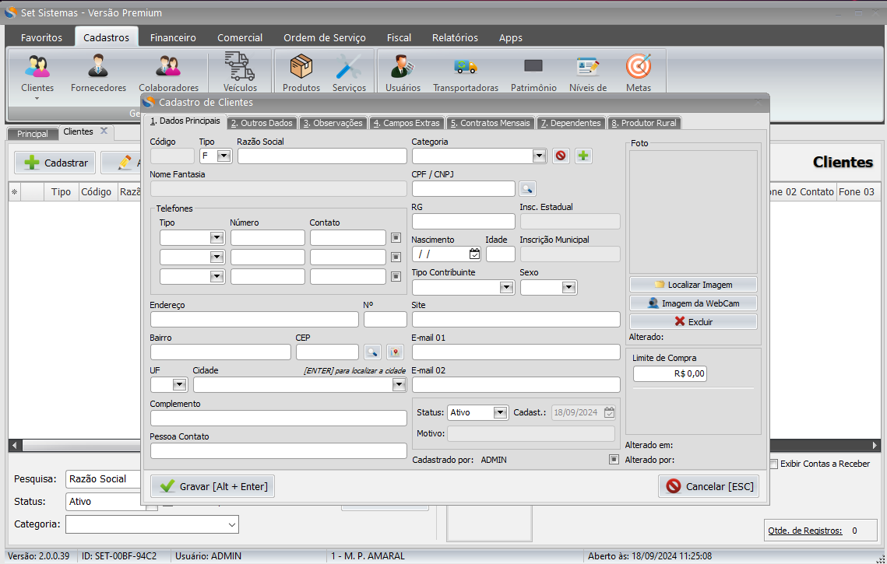

Introdução
Primeiro, selecione a aba “Cadastros”.

Depois, clique no botão “Clientes”.

Agora na tela de clientes, clique em “Cadastrar” para abrir um novo cadastro de cliente.

A janela de “Cadastro de Clientes” irá aparecer no centro de sua tela, você poderá preencher todos os dados do cliente nela.
Caso o seu cliente possua CNPJ, as informações principais como Razão, Nome Fantasia, Número de Telefone, Inscrição Estadual, E-mail, Endereço, N°, Bairro, Cep, UF e Cidade não precisam ser preenchidas manualmente, basta inserir o CNPJ em seu respectivo campo e pressionar a tecla “Enter” no teclado ou clicar no botão com o símbolo de uma lupa.

E voilà, os dados serão preenchidos automáticamente! Lembrando que esta função está disponível apenas para consulta de CNPJ, você ainda precisará preencher os dados manualmente caso seu cliente seja pessoa física (CPF). >

Agora basta usar o atalho [ALT + Enter] ou clicar no botão “Gravar” e seu cliente estará cadastrado no sistema.
Pessoa Física
O cadastro para pessoa física funciona de uma forma similar, porém na hora de informar o CPF ele não preenche automaticamente o restante dos dados, nesse caso é necessário inserir os dados de forma manual:Razão, Nome Fantasia, Número, Inscrição Estadual, E-mail, Endereço, N°, Bairro, CEP, UF e Cidade.
* O CEP também preenche a UF e a Cidade sozinho desde que estejam corretos.